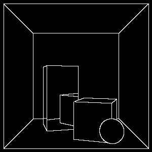
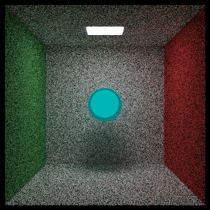

I created a pathtracer which can produce artistic effects during rendering. This project is an adaptation of an tutorial by Peter Shirley
Raytracing is a method of rendering technique in computer graphics, which simulates the physical transport of light in order to procedurally generate an image onto a screen. My project aims to demonstrate if non photorealistic techniques can be applied in a raytracing context.
For the project I aimed to provide the following:
For testing, the results would be qualitative data. I would need to demonstrate that the raytracer can produce 3 examples of non photorealism.
 The outlines were able to work extremely well against flat surfaces, but struggle against reflective smooth surfaces. Cel shading required context in where the light source was.
Overall, from the many challenges I faced when tackling the project, I was satisfied with the output of the outlines that my raytracer could produce, but not with the cel shader nor the painterly rendering. Despite this, I was able to demonstrate non photorealism in my application, as well as conceptualise a few techniques that could be used despite not having the opportunity to attempt the methods.